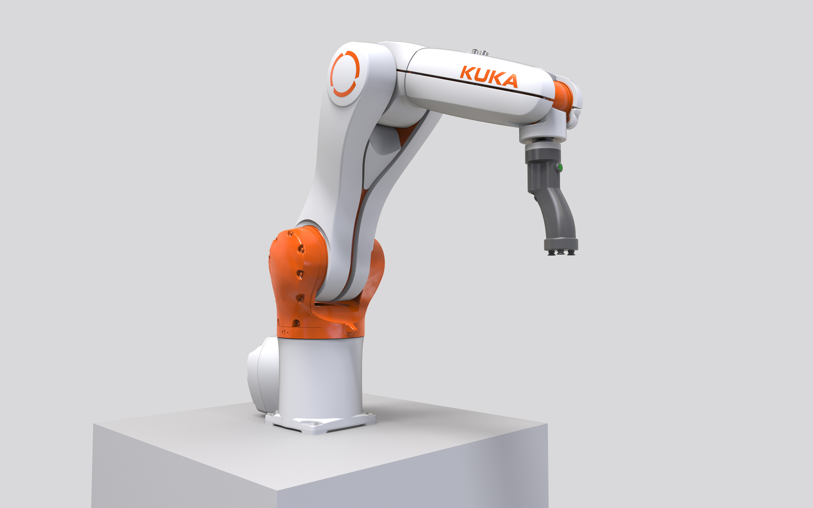
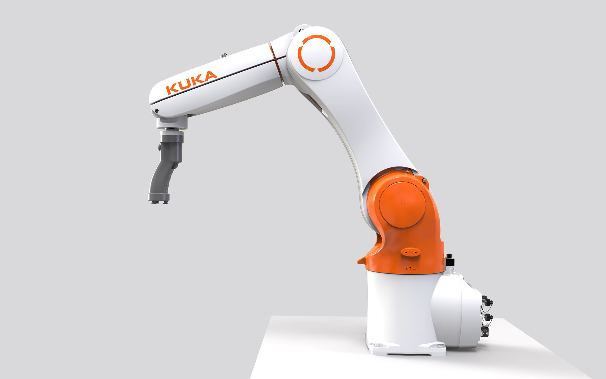
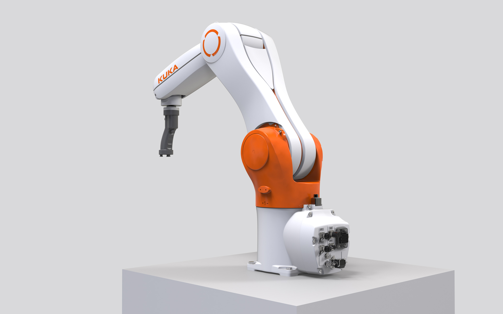

KUKA KR 6 AGILUS Cobotics
Cobot
KUKA KR 6 AGILUS Cobotics
Cobot
The KUKA KR 6 Agilus Cobotics is a sensitive, precise and easy-to-use robot that makes automation even
more intuitive and opens up new areas of human-robot collaboration.
It features a foamed outer shell with integrated capacitive sensors that react to the slightest external
forces and offer certified collision protection. Its 6 kg payload and the 900mm reach are optimized for
activities in narrow spaces, whether loading, unloading, packaging, reliable assembly or difficult tasks
in Research + Development.
Its sleek, organic design prevents crushing and is optimized for maximum protection. The high technical
quality standard, the cobot´s appearance, the ease of use and the effort in the user protection systems
set new standards. They represent the high standards and company philosophy of the KUKA brand.
Der KUKA KR 6 Agilus Cobotics ist ein sensitiver, präziser und leicht bedienbarer Roboter, der die
Automatisierung noch intuitiver gestaltet und neue Bereiche der Mensch-Roboter-Kollaboration erschließt.
Er besitzt an seinen Komponenten geschäumte Außenschalen mit integrierten kapazitiven Sensoren, die auf
geringste Kräfte von außen reagieren und zertifizierten Kollisionsschutz bieten. Mit einer 6 kg-Traglast
und einer 900 mm-Reichweite ist er auf Tätigkeiten in engen Räumen optimiert, ob Bestücken, Entnehmen,
Verpacken, zuverlässiges Montieren oder diffizile Arbeiten in der Forschung.
Sein geschmeidiges, organisches Design vermeidet Quetschungsgefahren und ist auf maximalen Schutz
abgestimmt. Der hochwertige technische Qualitätsstandard, das auf Sicherheit ausgelegte
Cobot-Erscheinungsbild, die leichte Anwendbarkeit und der Aufwand in den Anwenderschutz-Systemen setzen
neue Maßstäbe. Sie stehen für die hohen Ansprüche und Firmenphilosophie der Marke KUKA.



Images © Selić Industriedesign